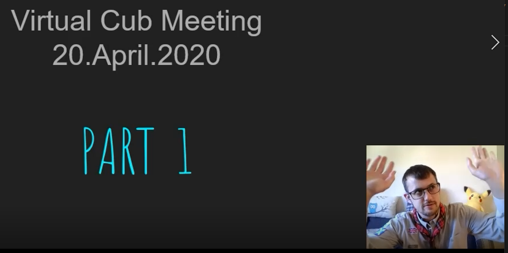
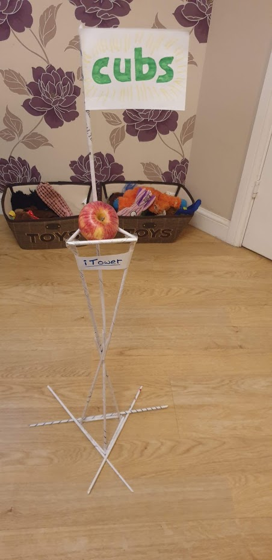

Cub Blog | 28 April 2020
Words: Gavin, Newmachar Cub Scout Leader
Given new guidance from the Prime Minister, we have suspended all face-to-face Scout meetings, activities and events for the time being.
Just because we can't meet in person doesn't mean we can't Carry on Scouting!
Along with the other Cub Leaders I've been using Online Scout Manager to hold virtual weekly meetings with the Cubs. It's quite a bit different to our normal meetings, for a start I've noticed that it's much quieter at home than in the noisy Scout Hall. 🙉
I've been pre-recording the tasks for each meeting, and the Cubs then upload what they've done on the night so we can update their badges. Talking on camera feels very strange to me, I'm defintly not going to be a 1 Million sub' YouTube star any time soon but it's all about giving it a go!.
We've had 7 Beavers move up to Cubs this term, and no Cubs due to move to Scouts till after summer, so we had thought that the hall was going to be packed! But it turn's out that's not been a problem.
One of things we need to plan out this term is how we'll do virtual swimming-ups & investitures. We did manage a virtual flag break last week which worked ok, so I'm sure we'll think of something.
This term we're trying to cover as much as possible from home. Luckly there is plenty to do!
We've already "Hiked to the Moon" with Chief Scout Bear Grylls and Astronaut/Scout Ambassador Tim Peak raising money for Children in Need as part of the Big Night In. Scouts from across the UK joined in and we walked over 240,000 miles raising over £300,000! That's incredible. Some Cubs went on a family walk others ran circles around their gardens to get a few miles in.
One new badge we've started working on is the Carry on Scouting Badge first thought up by the Forest of Dean Scouts down in Gloucestershire. The Badge is a big set of activites to keep the Cubs busy while at home. Many parts of the badge overlap with other Activity Badges and Challenge Awards which is great. You can find out more here!
This week the Cubs took part in a mini pioneering project at home as part of the badge. They were tasked with building as tall a tower as they could to support an apple or orange out of 20 sheets of Newspaper and a role of tape. We ran this activity during our weekly session and shared photos & videos of each others attempts. The tallest tower was almost 2 meters tall! My personal effort only reached 66 cm.
Another part of this badge is to make a webpage! So hopefully the Cubs will get a page up here soon too.
Sadly the Newmachar News has been canacled until further notice, but I can keep you updated here instead! Maybe I'll start vlogging... or maybe not.
Keep Calm and Carry on Scouting!